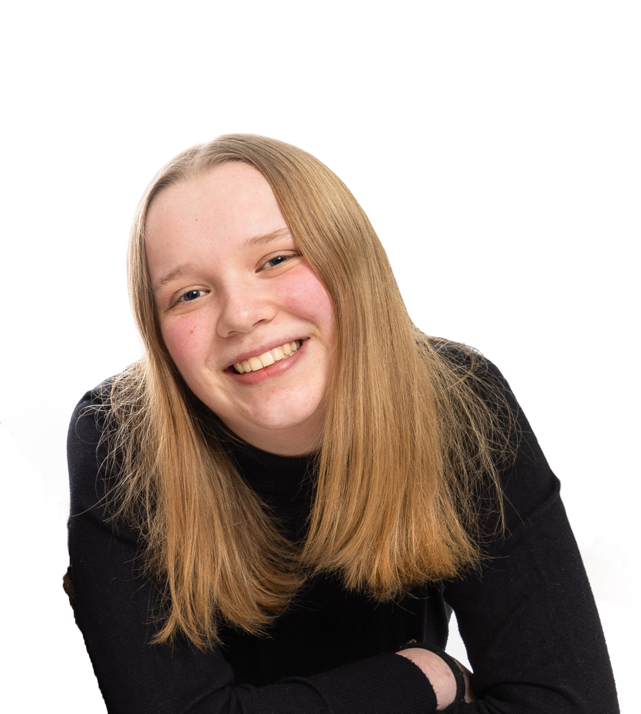

Things I'm good at:
- Frontend: HTML/CSS/JavaScript
- Backend: NodeJS/json
- Illustrator
- XD and Figma prototyping
- 3D design
- UI/UX design
- Being creative
Hi! My name is Nienke Buursink. I am currently 18 years old and I study Communication and Multimedia Design on the HvA. I am in my second year right now. I have a love for anything creative: from painting, to crocheting, to playing music, to coding. I also really like learning new things, from languages to a new hobby.
